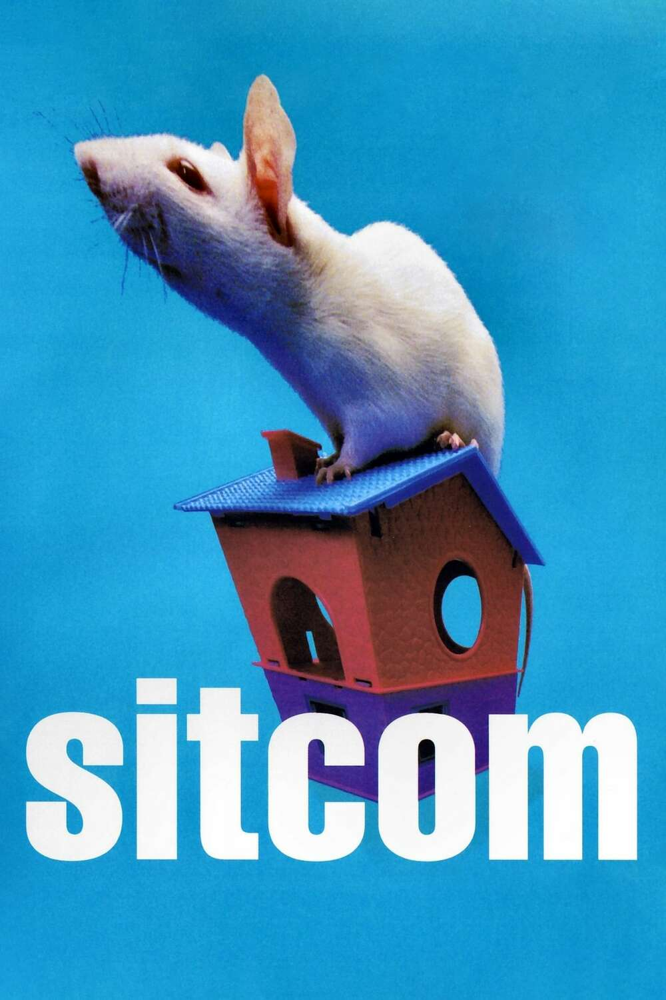
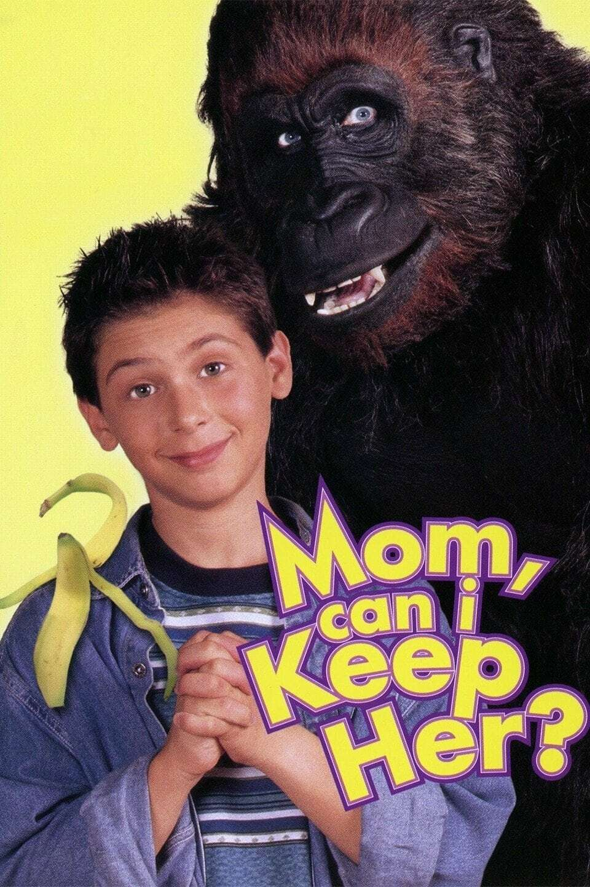
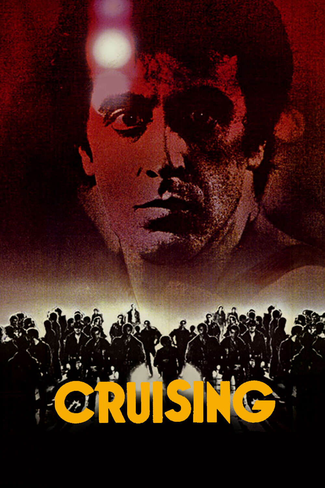
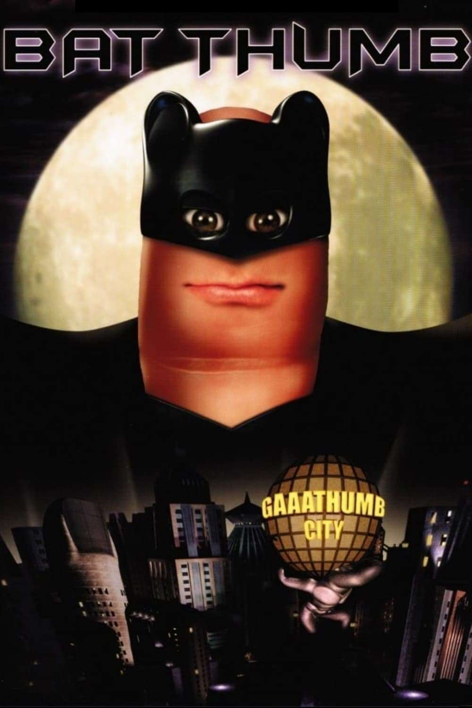
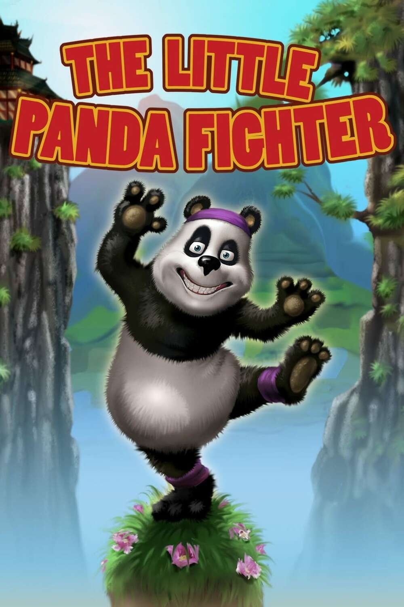
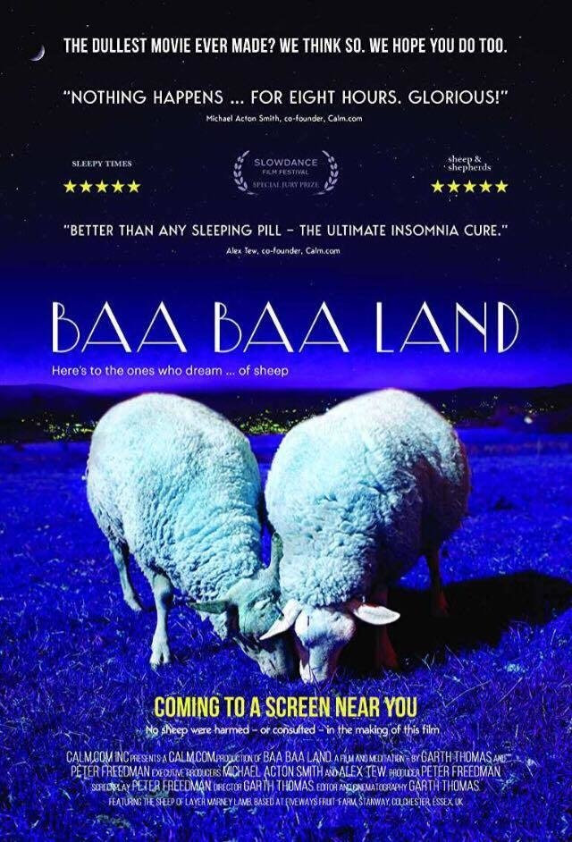
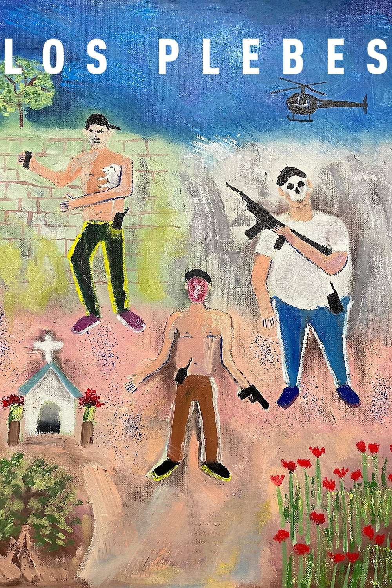
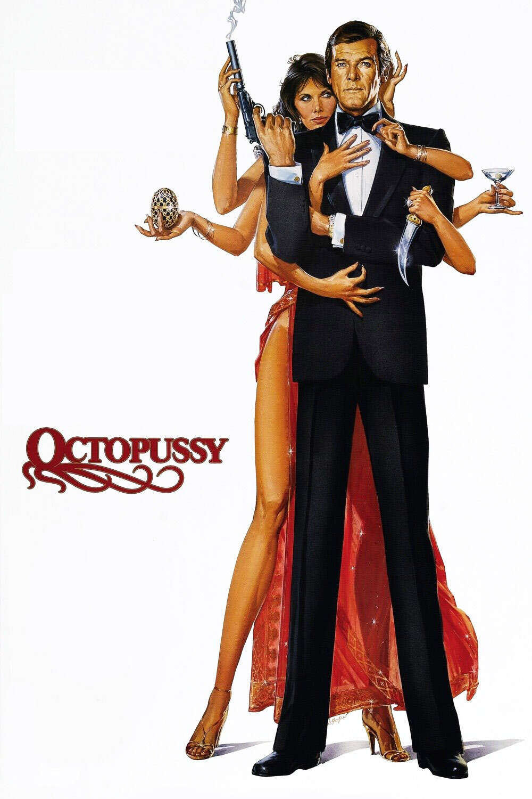

| Poster | Pelicula | Sinopsis |
|  | Sitcom 1998 Dirigida por François Ozón |
La familia es divertida. Pero hay límites… Las aventuras de una familia suburbana de clase alta se enfrentan abruptamente al descubrimiento de la homosexualidad por parte del hermano menor, al intento de suicidio de la hermana mayor y a las tendencias sadomasoquistas, y a la intrusión de una criada de espíritu muy libre y su marido. Y todo empezó con la llegada a la familia de una rata de aspecto inocente. |
|  | Mom, Can I Keep Her? 1998 Dirigida por Fred Olen Ray |
500 libras de diversión peluda… Timmy Blair tiene la cuota habitual de problemas de un niño de doce años: su padre está demasiado ocupado en el trabajo, su nueva madrastra lo carga con tareas domésticas y la vida escolar es más difícil que nunca. Cuando un amigo peludo lo sigue a casa desde la escuela, Timmy está encantado. Sólo hay un problema. Su nuevo amigo es un gorila de 500 libras |
|  | Cruising 1980 Dirigida por William Friedkin |
Al Pacino está buscando a un asesino. Cuando Nueva York queda atrapada en las garras de un sádico asesino en serie que se aprovecha de los clientes de los bares clandestinos de la ciudad, el joven novato Steve Burns se infiltra en la subcultura del S&M para intentar sacarlo de las sombras. |
|  | Bat Thumb 2001 Dirigida por David Bourla |
El superhéroe Wuce Bane (también conocido como Bat Thumb) y su fiel compañero, Blue Jay, son llamados a salvar a Gaaathumb City del malvado, despreciable y mal vestido “No Face.” ¿Sobrevivirá la ciudad? ¿Se revelará la verdadera identidad de Bat Thumb? ¿Aprenderá Vicky Nail a controlar sus ondas rebeldes? Descubra las respuestas a todas estas preguntas en esta última aventura cómica del maestro narrador Steve O. |
|  | The Little Panda Fighter 2008 Dirigida por Michelle Gabriel |
Un panda llamado Pancada, que trabaja en un club de boxeo, desea convertirse en bailarín pero se ve envuelto en una próxima pelea debido a un caso de identidad equivocada. |
|  | Baa Baa Land 2017 Dirigida por Garth Thomas |
Una epopeya contemplativa de ocho horas, protagonizada íntegramente por ovejas. |
| Respected Comrade Kim Jong Il is a Great Thinker and Theoretician 2000 Dirigida por Kim Jong Il |
Película documental que elogia al líder norcoreano, Kim Jong Il, por sus valores políticos y sociales y sus creencias para construir una nación comunista fuerte. | |
|  | Los plebes 2021 Dirigida por Eduardo Giralt Brun, Emmanuel Massú |
Un joven grupo de sicarios milenarios deambula por Sinaloa mientras intentan afrontar su crecimiento, su trabajo y sus deseos de futuro. |
| The J Team 2021 Dirigida por Michael Lembeck |
La historia sigue a una joven llamada JoJo cuya vida da un vuelco cuando su amado entrenador de baile decide retirarse y es reemplazado por una instructora que odia el brillo llamada Poppy. Queriendo seguir compitiendo para una próxima competencia de baile, JoJo y sus mejores amigos, The Rubies, deben hacer todo lo posible para cumplir con las nuevas y duras reglas de Poppy. Al darse cuenta de que ya no puede ocultar su brillo ni inclinarse, JoJo es expulsada de su grupo de baile y debe redescubrir lo que significa bailar para ella. | |
|  | Octopussy 1983 Dirigida por John Glen |
¡El mejor momento histórico de James Bond! James Bond es enviado a investigar después de que un compañero agente “00” es encontrado muerto con un invaluable huevo indio de Fabergé. Bond sigue el misterio y descubre un escándalo de contrabando y a un general ruso que quiere provocar una nueva Guerra Mundial. |